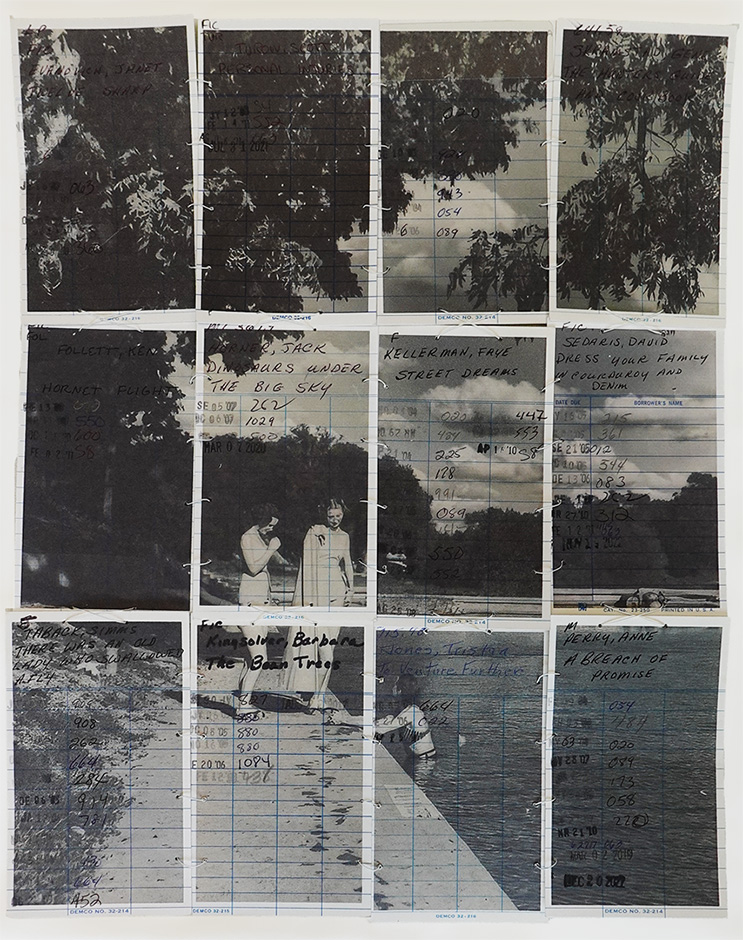

Artist x Educator x Author
xtine burrough is an artist, educator, author, and researcher whose work explores technology, language, remix, and creative participation.
As a media artist, xtine creates works for audiences in a variety of viewing situations. Her interactive works meet viewers online, socially engaged art finds participants in site-specific locations, and printed works embed digital techniques in original materials for public viewing in libraries, galleries, archives, and museums. Her works have been collected at The Elmer Holmes Bobst Library at New York University, The Getty Research Institute, The Joan Flasch Artists’ Book Collection at the School of the Art Institute of Chicago, and The Letterform Archive (San Francisco).
Printed projects foreground women's stories and experiences, often drawing from or intervening in digital archives. xtine employs printmaking techniques with laser etching, ink transfer, and cyanotype, sometimes combined with hand-stitching to create hybrid objects where computational methods are integrated into the material surface of the print. These works bring together hand-made and machine-mediated processes, translating archival and self-created digital images into tangible form.
In digital-native projects xtine creates space on networked platforms such as YouTube, Venmo, and Amazon Mechanical Turk (a virtual work platform) for critique and play. Her works focus on the individuals who function as invisible labor within these systems, tracing how technological infrastructures extend and reinforce the dehumanizing conditions of contemporary consumerism. Methodologically, xtine draws on remix practices—including appropriation, juxtaposition, collage, and computation—as both aesthetic strategy and critical tool. By reassembling fragments of digital and archival materials, she reframes dominant narratives through a feminist lens to present unnamed or uncited women from various collections. Throughout her practice, xtine uses the grid to extend the scale of small objects, amplifying their size, presence, and cultural importance.
An archive of her creative practice can be found on her playful website, missconceptions.net